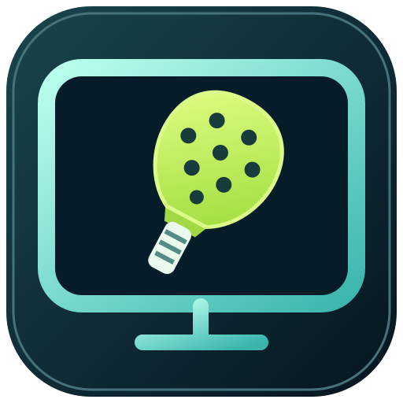
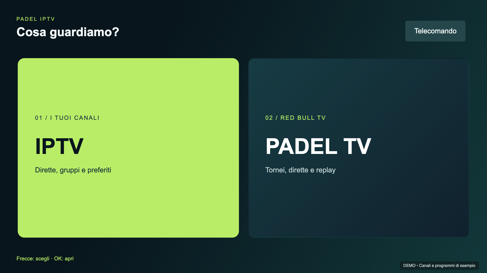
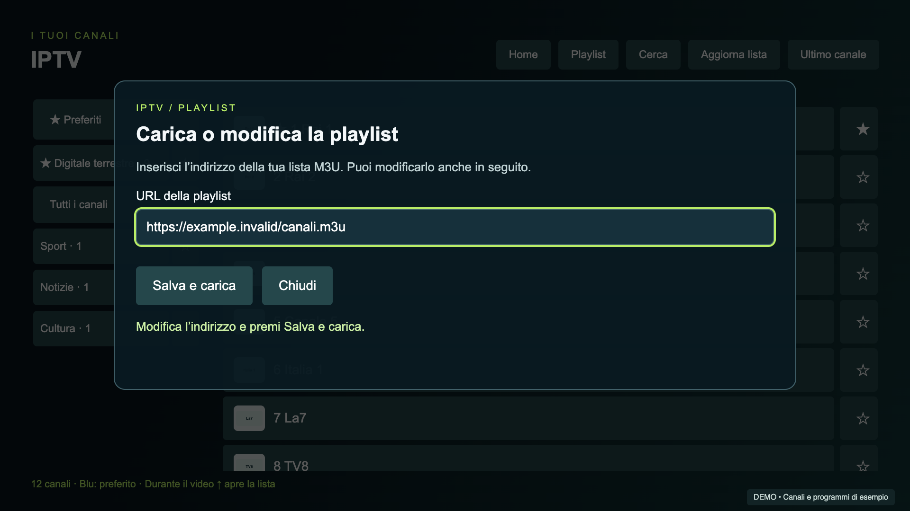
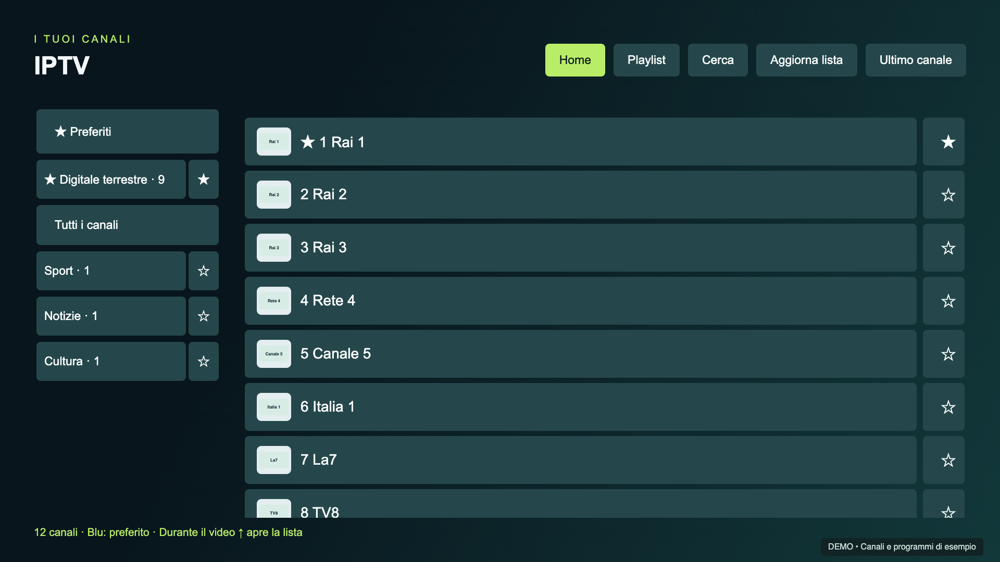
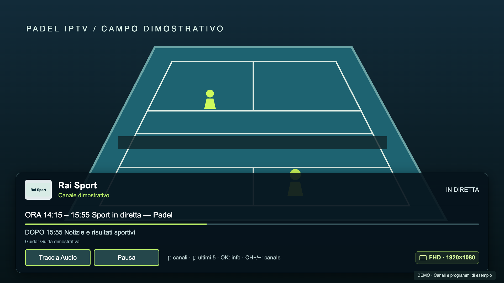
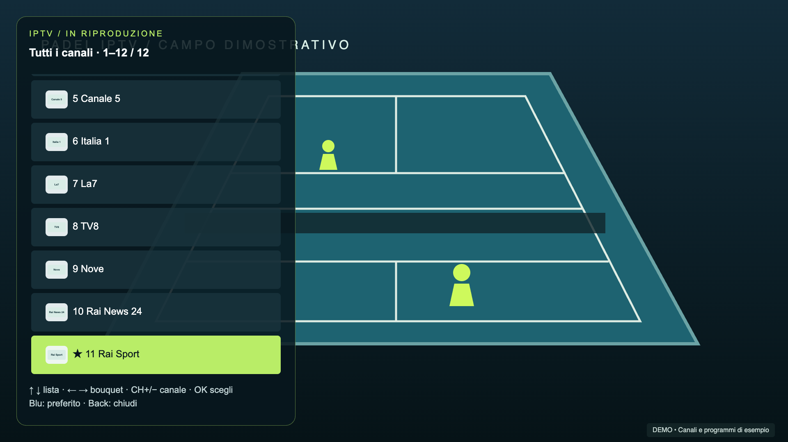
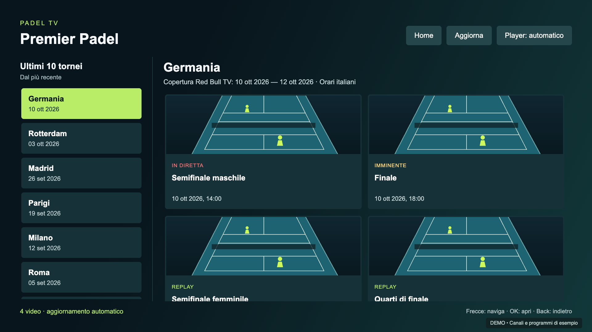
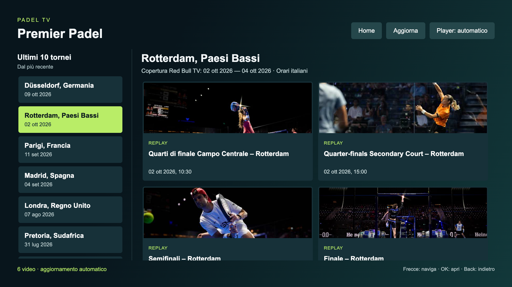
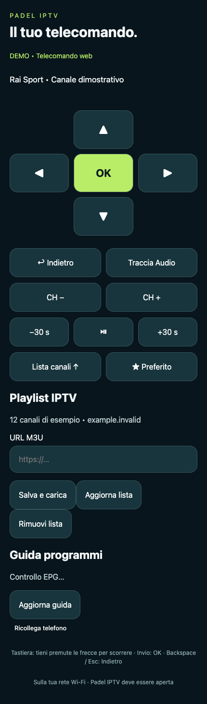

Il canale giusto,
senza cercarlo ogni volta.
Bouquet, ricerca e preferiti. Metti in cima i gruppi che usi di più e riparti dall'ultimo canale.

Padel IPTVLG WEBOS + SAMSUNG TIZEN / v0.6.2
Dal programma di stasera alla prossima semifinale. IPTV e Padel TV, insieme sul grande schermo.
LG: .ipk · Samsung: .wgt da firmare · Nessuna playlist inclusa

Due sezioni. Un solo telecomando.TUTTO A PORTATA DI FRECCIA
Bouquet, ricerca e preferiti. Metti in cima i gruppi che usi di più e riparti dall'ultimo canale.
Premi su per sfogliare i canali in trasparenza. Sinistra e destra scorrono i bouquet; CH+/CH− fanno zapping su Samsung e sul telecomando web. Su LG usa le frecce a info nascoste.
Logo, programma attuale, prossimo appuntamento e avanzamento. Un pannello leggibile, poi di nuovo solo il video.
DENTRO L'APP
Padel TV mostra il catalogo reale Red Bull TV, acquisito il 10 ottobre 2026. Solo le schermate IPTV usano canali e programmi di esempio, con un campo illustrato.






IL TELECOMANDO È GIÀ IN TASCA
Inserisci o modifica la playlist direttamente dalla TV oppure dal telefono. Naviga dal computer con frecce, Invio e Indietro. La TV ospita il server: dopo l'installazione, il computer può restare spento.
Telefono e TV devono essere sulla stessa rete. L'app deve restare aperta.

SOTTO IL COFANO
Verificata su LG UM7390PLC con webOS 4.10.2-29 e Samsung UE55NU7400 con Tizen 4.0. La versione Samsung usa NaCl ARM: altri modelli, incluse le TV recenti, non sono verificati.
PRONTI A COMINCIARE?
Nessuna lista IPTV o trasmissione è inclusa. Il file M3U di esempio contiene indirizzi non riproducibili. La sezione padel dipende dai contenuti disponibili su Red Bull TV e dai relativi vincoli territoriali. Codec, tracce audio e pausa dipendono dalla sorgente e dal televisore; non sono previsti registrazione o supporto DRM. Copertura e disponibilità EPG dipendono dai fornitori.
Padel IPTV è un progetto indipendente, non affiliato a LG, Samsung, Red Bull o alle emittenti. La sessione Developer Mode deve essere mantenuta attiva secondo le indicazioni LG. Il telecomando HTTP è destinato alla rete domestica.